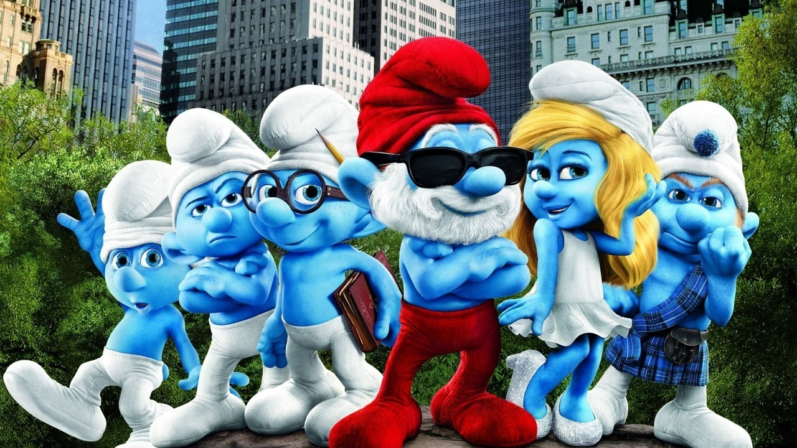
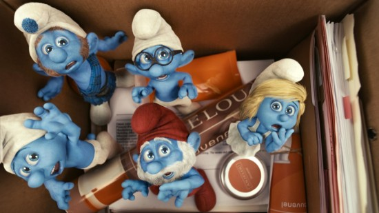

Welcome to my site!
Have a good day

Important Smurf
Today, I'm going to talk about the magical smurf Sassette was created by the Gargamel.The Smurfs are tiny, blue creatures who live in mushroom houses in a village hidden in the forest. Smurfs are blue, three-apples tall, and speak a dialect which makes heavy use of the word "smurf". The root word "smurf" is used extensively as a noun, verb, and everything in-between; "what a smurfy smurf, Papa Smurf" would not be an uncommon sentence. There are over 100 Smurfs inside the Smurf Village. The Smurfs are led by 543-year-old Papa Smurf, a good and powerful wizard. Each Smurf is assigned a task in the village, according to their ability and the needs of the community. Smurfs live peaceful lives in harmony with nature. The word "Schtroumpf" (Smurf) is the Flemish equivalent of the English language colloquial "Whatchamacallit".To serve as a sister for Smurfette. Like Smurfette, Sassette was evil at first as she was created using Gargamel's original spell, but with a Smurf-sized lump of magical blue clay. Papa Smurf used the same potion on her that he had used on Smurfette to make her a real Smurf. Sassette is a little freckled redhead female Smurfling with pigtails, and pink overalls. She calls Papa Smurf "Pappy" and Grandpa Smurf "Grandpy". She has somewhat of a warm place in her heart for Gargamel since she was made by his spell, calling him "Pappy Gargamel".
Smurfette is a female Smurf who was created by Gargamel. She originally had black hair, though this turned blonde when Papa Smurf worked all night to make her a real Smurf. Until the creation of Sassette, she was the only female Smurf in the village. In the cartoon series and in the 2011 movie, she's also Papa Smurf's. Weakling Smurf is a puny Smurf who tries to be athletic but fails at all kinds of sport. When Hefty Smurf organizes Olympic Games (published in 1980), Weakling tries but fails to make an impact while in the training stage and decides to give up. Papa Smurf gives him a special potion that he says will enable him to compete. Weakling proceeds to win every contest he enters but, on being awarded his medal, confesses that he cheated. Papa Smurf then reveals that his potion was nothing more than a form of harmless jam that he gave to Weakling in order to boost his morale, meaning that Weakling did win the Games on his own merits.

Antagonists
The evil aunt and guardian of boy Prince/King Gerard, Lady Imperia appears only in the Season 1 cartoon episode "The Clockwork Smurf", in which she and her henchman Thorick have locked her nephew up in a dungeon cell, pretending to his subjects that he is ill and has to be isolated, giving her the excuse to rule in his place as regent. She plans to eventually give the false news that Gerard is dead so that she can rule permanently, leaving her nephew to rot in his cell. The Smurfs and Clockwork Smurf help Gerard to escape and expose her, and she is banished from the kingdom, never to return, although other equally evil relatives of Gerard, namely uncle Sir Leopold in "Return of the Clockwork Smurf", and cousin Malcolm the Mean in "The Noble Stag", have tried to take the boy king's throne instead. Gargamel's pet cat. Although Gargamel never treats him well, Azrael manages to put up with his master. Azrael tends to realize beforehand that Gargamel's schemes will go awry, but reluctantly goes along with them anyway in hopes of possibly capturing a Smurf to eat. Azrael shares Gargamel's distinctive laugh. Azrael was originally female in the comic books, but was changed to a male in the cartoon show and returned as a male in later comics and in the movie. In one episode of the series, Azrael got so tired of Gargamel treating him cruelly that he turned against his master. However, in the movies, he still remains loyal to Gargamel, although he laughs at his master whenever he gets humiliated or hurt.
Hogatha is a character who was created for the television cartoon series, but has appeared in at least one of the comics for the magazine, which has often borrowed from episodes of the show. She is an evil, ugly witch who uses her magic to lure unsuspecting suitors, and occasionally cause trouble for the Smurfs. Hogatha snorts loudly with her large Wart covered nose. She thinks she's beautiful, although she is actually quite ugly and wears a red wig to cover her baldness. She rides on a long-suffering vulture whose name tends to vary from one episode to another, but the most frequent one is Harold. She and Gargamel dislike each other, and she often refers to him as "Garglesmell". Hogatha used a spell to disguise herself as a Smurf who constantly snorts and causes trouble, under the name Snorty Smurf, in the first season episode "The Fake Smurf."
Count Gregorian is an evil wizard who only appeared in the Season 2 episode "The Raven Wizard". He was originally thought to be Princess Sabina's new tutor, but it was revealed that he was the legendary Raven Wizard, cursed with the head of a raven, when the temporary spell to restore his human head wore off. He kidnapped Sabina, whose beauty he needed to restore his human face with the aid of a magical gem called the Heart Diamond, even though she would be drained of her life's energy as a result. He failed when Johan and Peewit entered his castle, the latter causing the Heart Diamond to explode, turning the wizard into a complete raven presumably forever. He is similar in trait to Gargamel in that they're both evil wizards and were voiced by Paul Winchell.
Mordain is an evil court wizard who solely appears in the Season 2 episode "The Good, The Bad and The Smurfy". He captured Papa Smurf, Smurfette, Clumsy Smurf and Brainy Smurf to entertain his master King Argon and his Knights on the King's birthday. When the other Smurfs entered the castle to free the captured Smurfs, Papa Smurf turned him into a frog, where he now spends his days eating flies. He is similar in trait to Gargamel and Count Gregorian in that they're evil wizards and voiced by Paul Winchell (though Count Gregorian and Mordain are not actually related to Gargamel).
